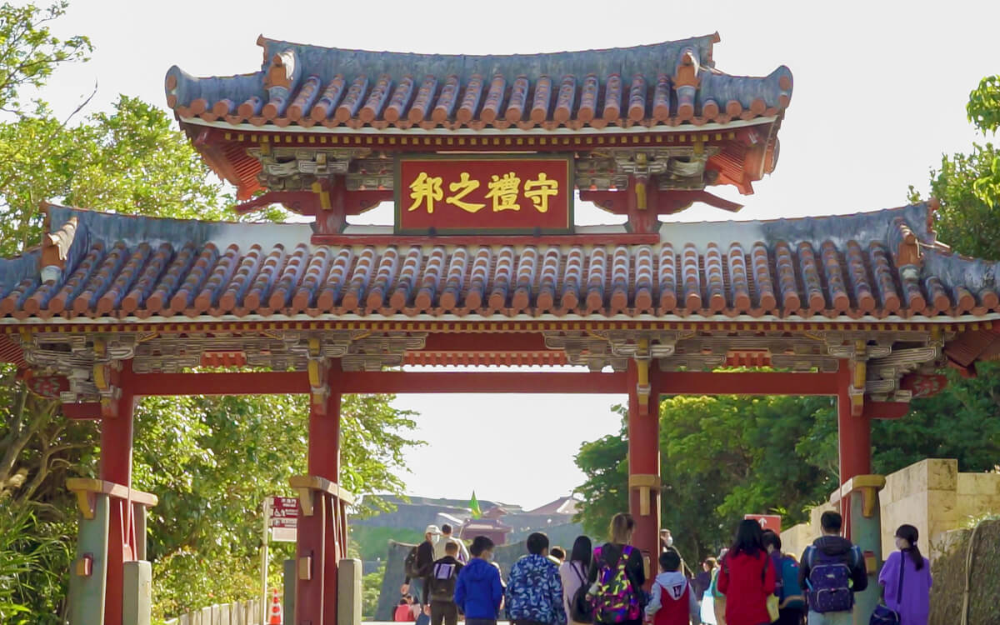
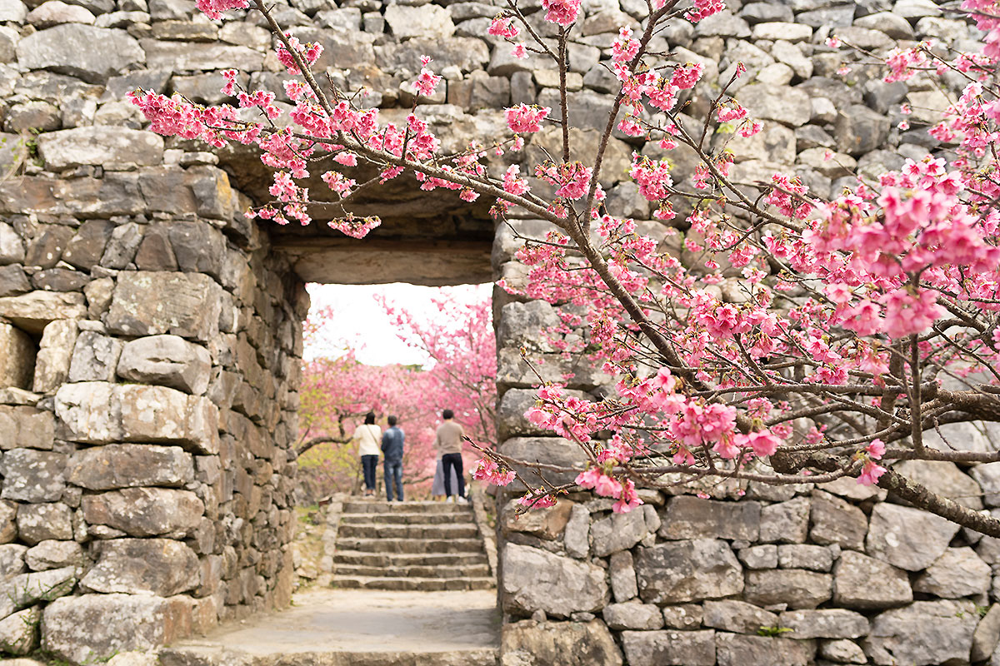

Okinawa Prefecture is located in the eastern part of the Asian continent, and is the
southwestern most point of the Japanese archipelago, which is a chain of isolated islands.
It is a prefecture of islands, comprising 160 large and small islands (over 0.01 square
kilometers) which are located in a vast marine area of roughly 1,000 kilometers from east to
west and roughly 400 kilometers from north to south.
During the years when Okinawa was ruled by the Ryukyu Kingdom, our ancestors began paddling
their boats and headed for the open seas while the seasonal winds guided the sails of their boats,
and the Kingdom flourished through foreign trade.
By taking advantage of our geographic location - as we are the closest region in Japan to Southeast
Asian countries - as well as our experiences with cultural exchanges that we have cultivated with
foreign countries until now, we are striving to develop an open prefecture in order to serve as the
center for international exchanges.
(Source: Okinawa Official Website)
Prefecture Image
Shurijo Castle
Okinawa Travel Guide
Nakijin Castle Ruins
